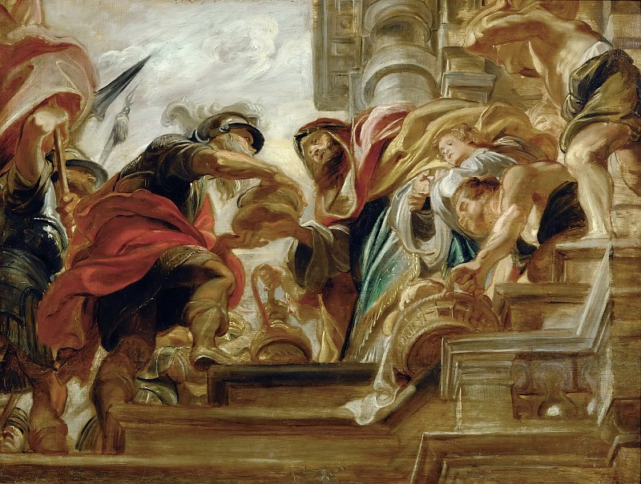

Авраам и Мельхиседек

Характеристика веры Авраама будет неполной, если пройти мимо его встречи с Мелхиседеком. Эта встреча состоялась сразу после победы над Кедорлаомером и языческими царями, пленившими Лота, и имела для Авраама большое значение.